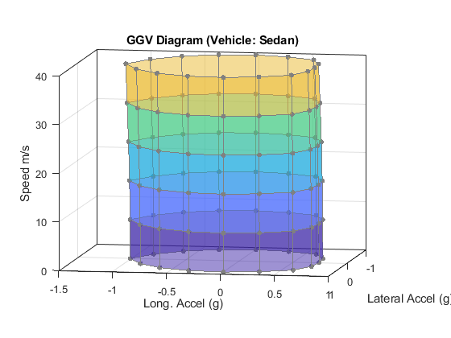
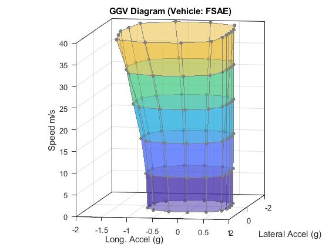
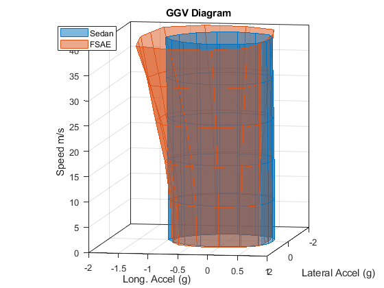

GGV Diagram Generation from Virtual Tests
The commands below run a series of simulations on a full vehicle model to generate a GGV diagram. For each test,
- The vehicle is resting on a flat surface with the brakes applied
- The vehicle is constrained so that it cannot yaw
- A downforce and drag force are applied consistent with a given vehicle speed
- The x- and y- components of the gravity vector are gradually increased until the vehicle starts to slide across the ground
Sets of points are collected around the friction circle in the xy-plane and at different vehicle speeds. Plotting these points on a surface creates the GGV diagram. This diagram is normally produced for quasi-steady state behavior. These tests can be run sequentially or in parallel.
Contents
Open model
Generate GGV Diagram for Sedan
load Vehicle_189 Vehicle = Vehicle_189; [simOut, simInput, filename_ggv1] = sm_car_sweep_ggv_pts('sm_car',Vehicle,16,linspace(0,40,6),true);
Warning: Unable to save App Designer app object. Save not supported for matlab.apps.AppBase objects. Warning: Unable to save App Designer app object. Save not supported for matlab.apps.AppBase objects.
Generate GGV Diagram for Formula Student Vehicle
load Vehicle_198 Vehicle = Vehicle_198; [simOut, simInput, filename_ggv2] = sm_car_sweep_ggv_pts('sm_car',Vehicle,16,linspace(0,40,6),true);
Warning: Unable to save App Designer app object. Save not supported for matlab.apps.AppBase objects. Warning: Unable to save App Designer app object. Save not supported for matlab.apps.AppBase objects.
Compare GGV Diagrams on the same plot
load(filename_ggv1); GGV_data1 = GGV_data; load(filename_ggv2); GGV_data2 = GGV_data; clr_order = colororder('default'); fig_h = sm_car_plot_ggv_surf(GGV_data1,false,clr_order(1,:)); fig_h = sm_car_plot_ggv_surf(GGV_data2,true,clr_order(2,:)); legend({'Sedan','FSAE'},'Location','Best')